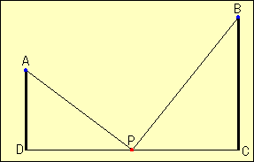

| In the right figure , AD=3 , BC=5 and CD=8. The angle ADC and BCD are right angle. The point P is on the line CD. Find the minimum value of AP + BP |  |
How to use this applet1.Drag red point. 2.Click "Hint" to show the hint. 3.Press "Init" button to go to the first step. |
|
|